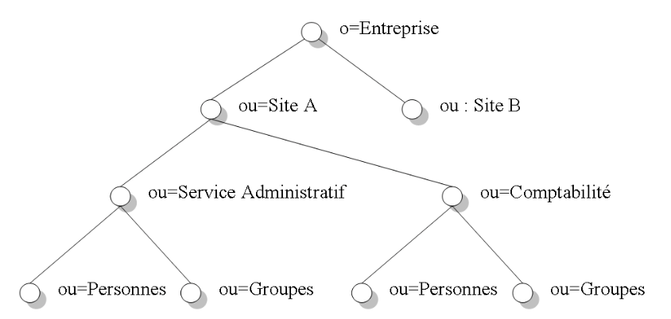
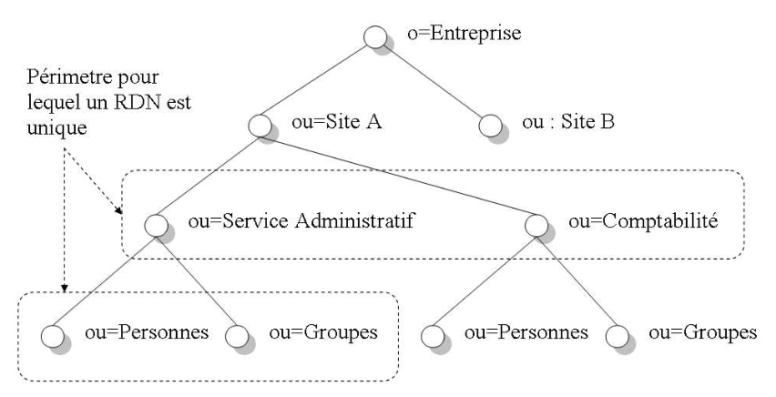
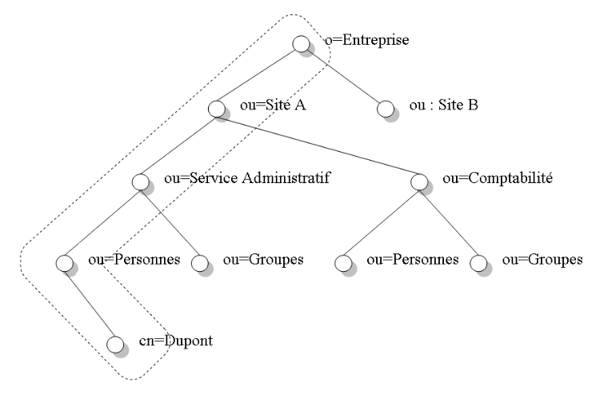

Comme expliqué précédemment, le standard LDAP couvre plusieurs aspects. Il définit un protocole d’échange mais également quatre modèles. Ces modèles définissent les services offerts par l’annuaire et la façon dont les données sont organisées.
Le modèle de donnée, ou modèle d’information du standard LDAP, définit la structure de l’annuaire. Le DIT (Directory Information Tree) est l’ossature de l’annuaire. Il peut être vu comme un arbre et représente bien l’organisation hiérarchique des données dans l’annuaire. Chaque feuille ou noeud de l’arbre, est une entrée dans l’annuaire. Une entrée est l’unité de base de l’annuaire. Vis-à-vis de ses entrées, LDAP a une approche orienté objet. En fait, chaque entrée est un objet qui instancie une ou plusieurs classes d’objets (objectClass). Les classes d’objets peuvent dériver d’autres classes. Un objeClass contient des attributs obligatoires ou non. Un attribut a un type et une syntaxe bien définis. Enfin, tous les attributs et classes possèdent un numéro unique appelé OID (Object Identifier). Toutes ces notions sont expliquées en détail dans la suite de ce chapitre.
Dans un annuaire, les données sont organisées de manière hiérarchique. Cette vue des données peut être représentée comme un arbre avec un noeud principal (racine) et des noeuds feuilles correspondant aux entrées dans l’annuaire. Cet arbre est également appelé DIT (Directory Information Tree). Le schéma 1.6 donne un exemple de DIT simple.

Fig. 1.6 – Arborescence simple d’un annuaire
Le noeud le plus haut du DIT définit le contexte de nommage ou espace de nommage de l’annuaire. Ainsi, quand une requête arrive au serveur, celui-ci peut savoir directement si l’annuaire prend en charge le contexte demandé. Concrètement, si un client LDAP recherche le nom d’un employé de l’entreprise nommée "X" et que l’annuaire ne concerne que les employé de l’entreprise "Y", la requête peut être abandonnée sans avoir a parcourir tout l’arbre.
Les définitions des attributs et des classes d’objet supportées par l’annuaire sont stockées dans un schéma. En respectant son schéma, l’annuaire peut garantir l’intégrité de ses données. En effet, aucune modification ou ajout ne sera autorisé si l’opération ne respecte pas les règles établies par le schéma. Par exemple, une entrée dont un attribut obligatoire est manquant ne sera pas ajouté dans l’annuaire. En outre, le schéma de l’annuaire est extensible. Ainsi, il est tout à fait possible d’ajouter de nouvelles définitions d’attribut ou de classe d’objet.
A chaque type d’attribut ou classe d’objet est associé un identifiant unique appelé OID (Object Identifier). Un OID est une suite de numéros séparés par des points (par exemple 6.5.789.4.89.676). Comme pour les adresses IP sur Internet ou les numéros de port, il a été nécessaire de désigner un organisme chargé d’attribuer les OID au niveau mondial : l’IANA (Internet Assigned Numbers Authority). L’avantage des OID est leur organisation hiérarchique. En effet, l’entreprise à qui un OID a été assigné, peut créer indéfiniment de nouvelles branches sous son numéro racine. Par exemple, l’OID 1.2.840.113556, attribué à Microsoft, a été étendu pour donner l’OID 1.2.840.113556.1 pour les attributs et les classes du logiciel Active Directory Server2.
Chaque entrée dans l’annuaire est composée d’attribut. Ce sont eux qui vont réellement contenir les données de l’annuaire.Un attribut est caractérisé par plusieurs informations dont un nom, un OID et une syntaxe. Tout comme une variable dans un langage de programmation, un attribut doit posséder un type de donnée. C’est la syntaxe associée à l’attribut qui va décrire le type de donnée que l’attribut peut contenir. L’exemple suivant montre la définition de l’attribut telephoneNumber.
attributetype ( 2.5.4.20 NAME ’telephoneNumber’
DESC ’RFC2256: Telephone Number’
EQUALITY telephoneNumberMatch
SUBSTR telephoneNumberSubstringsMatch
SYNTAX 1.3.6.1.4.1.1466.115.121.1.50{32} )
Les principales caractéristiques d’un attribut sont repris au tableau 1.2.
| Caractéristique | Description |
|---|---|
| OID | Identifiant de l’attribut. |
| NAME | Nom de l’attribut. |
| EQUALITY | OID de la règle à appliquer lors d’une comparaison. |
| SYBSTRING | OID de la règle à appliquer lors d’une recherche d’une chaîne de caractère dans l’attribut. |
| SYNTAX | OID de la syntaxe définissant le type de donnée stockée dans l’attribut. |
| SINGLE-VALUE | Indique si l’attribut peut avoir ou non plusieurs valeurs dans un même objet. |
Tab. 1.2 – Caractéristiques d’un attribut
La syntaxe de l’attribut définit la règle de codage utilisée pour stocker la valeur d’un attribut. Le tableau 1.3 décrit les principales syntaxes d’un attribut. Quant au tableau 1.4, il présente quelques attributs définis par LDAP. Cette liste est loin d’être exhaustive mais ces attributs sont toujours implémentés par un serveur d’annuaire LDAP.
| Syntaxes | Description |
|---|---|
| binary | Suite quelconque d’octets. |
| boolean | Vrai ou faux. |
| integer | Nombre entier. |
| Directory String | Chaîne de caractères. |
| db | Attribut contenant le Distinguished Name d’une entrée (voir Modèle de nommage). |
Tab. 1.3 – Syntaxes d’un attribut
| Syntaxes | Description |
|---|---|
| namingContexts | Liste des contextes supportés par l’annuaire. Le contexte d’un annuaire est l’entrée racine de l’arbre. |
| cn | Le CN (Common Name) représente le nom de l’objet. |
| dc | Composante d’un nom de domaine. Par exemple, le FQDN (Fully Qualified Domain Name) "inpres.be", se décompose en deux DC ("inpres" et "be"). |
| o | Contient le nom d’une organisation. |
| objectClass | Nom de la classe de l’objet. |
| ou | Unité organisationnelle à laquelle appartient l’entrée. |
| uid | Identifiant utilisé lors du login. |
| userPassword | Mot de passe associé à l’attribut uid. |
Tab. 1.4 – Quelques attributs LDAP
Toute entrée dans un annuaire LDAP est un objet instance d’une classe. Chaque classe est caractérisée par plusieurs informations dont un OID, un nom et un type. Le tableau 1.5 décrit les caractéristiques essentielles d’une classe d’objet.
| Syntaxes | Description |
|---|---|
OID | Identifiant de la classe (doit être unique). NAME | Nom de la classe. SUP | Classe dont celle-ci dérive. TYPE | Type de la classe (abstraite, structurelle ou auxiliaire) MUST Liste des attributs obligatoires. MAY | Liste des attributs facultatifs.
Tab. 1.5 – Caractéristiques d’une classe d’objet
Comme précisé au tableau 1.5, une classe doit avoir un type parmi les suivants :
Comme en POO (Programmation Orienté Objet), l’héritage des classes est d’application. D’ailleurs, toutes les classes LDAP dérivent de la classe abstraite top. Cette classe ne définit qu’un seul attribut obligatoire : objectClass. Ce dernier est utilisé pour contenir le nom de la classe instanciée par l’objet. Le code suivant donne un exemple de définition de classe d’objet LDAP.
objectclass ( 2.5.6.6 NAME ’person’
DESC ’RFC2256: a person’
SUP top STRUCTURAL
MUST ( sn $ cn )
MAY ( userPassword $ telephoneNumber $ seeAlso $ description ) )
La classe d’objet "person" définie plus haut, contient deux attributs obligatoires (MUST) et quatre attributs facultatifs (MAY). La classe person dérive directement de la classe top. Ainsi, l’entrée concernant l’employé "dupont" de la société "Sun", donnera au format LDIF (voir Le format d’échange LDIF) :
dn: cn=jean, dc=Sun
telephoneNumber: 04240667834
userPassword:: e1NIQX1uSmFkMzBWQ
objectClass: top
objectClass: person
sn: dupont
cn: jean
Le tableau suivant (1.6) reprend quelques classes d’objet LDAP souvent utilisées. Syntaxes | Description --- | --- top | Classe la plus haute dans la hiérarchie des classes. C’est à partir de cette classe que dérivent toutes les autres. person | Description générique d’une personne (nom, prénom, numéro de téléphone...) inetperson | Personne faisant partie d’une entreprise et ayant accès à des services Internet. organization | Représente une entreprise. organizationalUnit | Représente un service ou un département d’une entreprise posixAccount | Classe utilisée pour représenter un compte utilisateur d’un système d’exploitation conforme aux normes POSIX (Portable Operating System Interface) comme Linux, Solaris...
Tab. 1.6 – Classes LDAP
L’objet rootDSE est un objet LDAP particulier n’appartenant à aucune classe. Il est destiné à détenir des informations générales sur l’annuaire dont :
Il est possible de lire cet objet en recherchant dans l’annuaire un objet ne possédant pas de nom. En effet, l’objet rootDSE est le seul objet d’un annuaire dont le DN (nom distinctif de l’objet) peut être vide.
Le modèle de nommage, ou modèle de désignation, définit comment les entrées de l’annuaire peuvent être référencées et nommées de manière unique et ce quelle que soit la classe de l’objet. La possibilité de nommer tout objet de la même façon, quelle que soit sa nature, permet de qualifier un annuaire d’espace de noms homogènes. Cette caractéristique offre une plus grande ouverture et interopérabilité des annuaires LDAP.
Le standard LDAP fournit deux concepts pour nommer un objet : un nom absolu appelé DN (Distinguished Name) et un nom relatif appelé RDN (Relative Distinguished Name)
Le RDN (Relative Distinguished Name) ou nom relatif permet d’identifier de façon unique les entrées d’une même branche et d’un même niveau dans l’annuaire. Dans la figure 1.7, les deux zones de l’arborescence encadrées d’un trait pointillé définissent des périmètres pour lesquels un RDN doit être unique.

Fig. 1.7 – Périmètre d’unicité du RDN
Un RDN est composé d’un attribut et d’une valeur. Ainsi, le RDN d’une entrée concernant une personne peut-être par exemple cn=laurent ou encore uid=laurent. Dans l’exemple donné au tableau 1.7, il n’est plus possible de définir une entrée concernant un service administratif pour le site "A". En effet, le nom distinctif relatif "ou= Service Administratif" existe déjà pour cette branche (site A) et ce niveau. Par contre, il est possible de créer plusieurs RDN "ou=Personnes". Une entrée sous la branche "ou=Service Administratif" et l’autre sous la branche "ou=Comptabilité".
A l’inverse d’un RDN (Relative Distinguished Name), le nom distinctif ou DN (Distinguished Name) permet de référencer de façon unique n’importe qu’elle entrée de l’annuaire. Le DN d’une entrée est constitué de tous les RDN (Relative Distinguished Name) de ses entrées parentes. La figure 1.8 donne un exemple de DN.

Fig. 1.8 – Exemple de nom distinctif (DN)
Un DN se construit en reprenant tous les RDN des entrées supérieures. Ainsi, le DN pour l’entrée concernant la personne Dupont (cn=Dupont) se notera de la façon suivante :
cn=Dupont, ou=Personnes, ou=Service Administratif, ou=Site A, o=Entreprise
Le modèle fonctionnel, ou modèle des services, définit les opérations que doit offrir un serveur d’annuaire LDAP. Dès lors, il est possible d’établir la liste suivante :
Connexion (Bind) :
Opération de connexion du client LDAP à l’annuaire LDAP. Le client doit fournir un identifiant (souvent l’attribut uid) et un mot de passe (attribut userPassword).
Déconnexion (Unbind) :
Libère la connexion et met fin à la session.
Notification (Unsolicited Notification) :
Permet au serveur d’envoyer au client une information non sollicitée par le client comme, par exemple, le signalement d’une fin de session inattendue.
Recherche (Search) :
Permet d’effectuer des recherches dans l’annuaire.
Modification (Modify) :
Permet d’ajouter, de modifier ou de supprimer des attributs d’une entrée.
Ajout (Add) :
Permet l’ajout d’un nouvel objet.
Suppression (Delete) :
Permet la suppression d’un objet.
Modification de DN (Modify DN) :
Permet de renommer un objet en modifiant son DN.
Comparaison (Compare) :
Permet d’effectuer des comparaisons et de vérifier si l’annuaire contient une ou plusieurs valeurs données.
Abandon (Abandon) :
Permet d’abandonner une opération en cours.
Extension (Extended) :
Permet de définir des opérations étendues. C’est à dire des opérations non standards. En effet, le protocole LDAPv3 permet d’étendre les fonctionnalités du serveur en définissant de nouvelles opérations.
Les recherches dans un annuaire, peuvent se compléter de filtres de recherche. Un filtre est simplement une chaîne de caractères composée d’expression de comparaison et d’opérateur ET, OU et NON. Une expression est constituée d’un attribut, d’un opérateur de comparaison et d’une valeur. Ainsi, un filtre de recherche peut ressembler a ceci :
(&(objectclass=person)(cn=laurent))
Dans cet exemple, la recherche ne retournera que les entrées dont la classe est de type person et l’attribut cn vaut "laurent". Le caractère * permet de prendre en compte toutes les valeurs rencontrées. Ainsi, le filtre (objectclass=\)* retournera toutes les entrées quelle que soit leur classe d’objet.
Dans un réseau informatique, la sécurité est très importante. En effet, envoyer des données sensibles sur un réseau constitue toujours un risque. Des personnes mal inten- tionnées peuvent intercepter des messages transmis sur le réseau, s’en servir pour s’in- troduire dans un système et causer des dégâts. Pour cela des données critiques comme les mots de passe devraient être protégées durant leur transfert (et ne pas circuler en clair sur le réseau comme le font des protocoles comme http, ftp, telnet...). De plus, quand il est question de partager des ressources sur un réseau, il est important de s’as- surer que l’utilisateur ou le client qui réclame l’information est bien celui qu’il prétend être et savoir ce qu’il peut faire une fois authentifié. La sécurité comprend en général plusieurs aspects dont :
L’authentification :
s’assurer que l’utilisateur est bien celui qu’il prétend être.
La confidentialité :
protéger les informations à l’aide de cryptage pour qu’elles ne soient pas compréhensibles par un tiers.
L’intégrité :
s’assurer que l’information ne soit pas altérée par un tiers avant d’arriver à destination.
Les habilitations :
s’assurer que l’utilisateur possède bien les droits de lecture ou d’écriture sur des données.
Pour ce qui est du standard LDAP, il prend en compte ces concepts et offre différentes solutions.
Réalisée lors de la connexion, l’authentification permet de s’assurer de l’identité d’un client et de déterminer ses droits. Il existe deux niveaux d’authentification. Le premier est basé sur la vérification du couple nom d’utilisateur et mot de passe. Le deuxième niveau, appelé authentification forte s’appuie sur quelque chose que possède l’utilisateur comme par exemple un certificat.
L’authentification LDAP, propose plusieurs mécanismes de sécurité couvrant les deux niveaux. Mais avant de continuer, il est important de comprendre comment se réalise l’authentification du client LDAP. C’est au moment de l’opération de connexion ou binding (voir Le modèle fonctionnel) que le client fournit son identification. Pour ce faire, le client envoie plusieurs informations au serveur :
Une fois ces informations envoyées au serveur, ce dernier peut vérifier si l’entrée correspondant à l’identifiant du client (le DN envoyé) existe bien dans l’annuaire. Si l’entrée est retrouvée, le serveur peut contrôler les paramètres d’authentification et valider ou non l’authentification du client. Une fois authentifié, le client peut effectuer des opérations de recherche et de mise à jour en fonction du niveau d’habilitation qu’il possède (voir La gestion des habilitations).
Le standard LDAPv3 (LDAP version 3) définit plusieurs mécanismes d’authentification :
C’est la méthode d’authentification la plus simple. Cette solution ne doit être utilisée que si les données ne nécessitent pas une grande sécurité. Elle est souvent employée quand les données stockées dans l’annuaire peuvent être consultées par tout le monde.
Pour obtenir un accès anonyme, le client va s’authentifier avec un DN et un mot de passe vide. Si le serveur accepte les connexions anonymes, le client sera authentifié et obtiendra les droits définis pour les utilisateurs anonymes.
L’authentification simple consiste à vérifier le mot de passe envoyé par le client et celui enregistré dans l’annuaire. Pour cela, le serveur compare le mot de passe du client et la valeur de l’attribut userPassord de l’entrée correspondant au DN fournit.
Si le mot de passe n’est pas stocké en clair dans l’annuaire, le serveur hash ou chiffre le mot de passe avant de le comparer avec celui envoyé par le client. Si la comparaison réussi, le client est authentifié.
Même si ce mécanisme est supporté par les versions 2 et 3 de LDAP, il a l’incon- vénient de transmettre le mot de passe en clair sur le réseau. Une solution consiste à utiliser SSL/TLS pour protéger les messages échangés entre le client et le serveur.
Le protocole SSL (Secured Socket Layer), issu du monde Internet, est utilisé pour sécuriser les échanges entre un serveur et un client. SSL est notamment utilisé pour sécuriser des protocoles comme HTTP, FTP, SMTP, etc. Le protocole SSL est main- tenant normalisé par l’IETF et a été renommé TLS (Transport Layer Security).
Le protocole LDAP peut également utiliser SSL pour sécuriser les données échangées lors d’une session. Avec la version 3 de LDAP, il est possible d’utiliser SSL de deux façons :
LDAPS : L’utilisation de LDAP sur SSL nécessite l’utilisation du port 636 au lieu du numéro de port 389 dans le cas de sessions classiques (non sécurisées).
StartTLS : L’inconvénient de LDAPS est l’utilisation de deux ports. Avec StartTLS, le serveur peut négocier des sessions sécurisées ou non sur le même port (habituellement le 389).
Même si SSL permet une authentification serveur (le client authentifie le serveur) et une authentification cliente (le serveur authentifie le client) au moyen de certificat, l’authentification simple sur SSL/TLS ne diffère pas de l’authentification simple traditionnelle. SSL est utilisé pour crypter le trafic entre le serveur et le client afin de garantir la confidentialité de la communication et l’intégrité des données échangées.
SASL (Simple Authentication and Security Layer) est un standard indépendant de LDAP permettant au client et au serveur de négocier une méthode d’authentification. En plus du mode d’authentification, le client et le serveur peuvent se mettre d’accord sur l’utilisation d’une couche de sécurité comme SSL/TLS. Cette dernière n’a rien à voir avec LDAPS ou StartTLS.
Depuis LDAPv3, il est possible d’utiliser SASL mais les mécanismes d’authentifica- tion supportés dépendent des capacités du client et du serveur. Parmi les mécanismes associés à SASL on retrouve notamment :
CRAM-MD5 (Challenge Response Authentication Mechanism with Message Digest 5) :
Basé sur le mécanisme de hachage MD5 (Message Digest 5), il évite de transmettre le mot de passe en clair sur le réseau.
DIGEST-MD5 :
Version améliorée de CRAM-MD5.
Kerberos v4 :
Utilisation du protocole Kerberos3 version 4.
GSSAPI (Generic Security Service Application Program Interface) :
Utilisation du protocole Kerberos 3 version 5.
Même si LDAPv3 ne définit pas de mécanisme pour la gestion des habilitations, la plupart des produits présents sur le marché offre leur propre implémentation de ce mécanisme.
La gestion des habilitations consiste à définir des droits d’accès sur les éléments de l’annuaire à l’aide d’un ensemble de règles appelées ACL (Access Check List). Chaque ACL est constituée d’une série d’ACI (Access Control Item) qui déterminent les droits d’accès d’un utilisateur ou d’un groupe à une ressource.
L’exemple donné par la suite est une ACL implémentée par le logiciel OpenLDAP 4. L’avantage des listes de contrôle d’accès de OpenLDAP est une syntaxe simple et puissante.
access to *
by * read
Les ACL de OpenLDAP permettent de répondre à la question qui a accès à quoi ?. Dans l’exemple donné plus haut, l’ACL autorise l’accès en lecture à tous les utilisateurs anonymes ou authentifiés (by read) et ce, sur tous les éléments de l’annuaire (access to ). Les ACL de OpenLDAP sont vus en détail au Chapitre 4.
2Créer par Microsoft, Active Directory est l’implémentation du service d’annuaire LDAP pour l’environnement Windows.
3Kerberos est un protocole d’authentification réseau créé au MIT (Massachusetts Institute of Tech- nology). Kerberos utilise un système de tickets au lieu de mots de passe en texte clair. Ce principe renforce la sécurité du système et empêche que des personnes non autorisées interceptent les mots de passe des utilisateurs.
4OpenLDAP est une implémentation libre et open-source du protocole LDAP (http://www.openldap.org/).